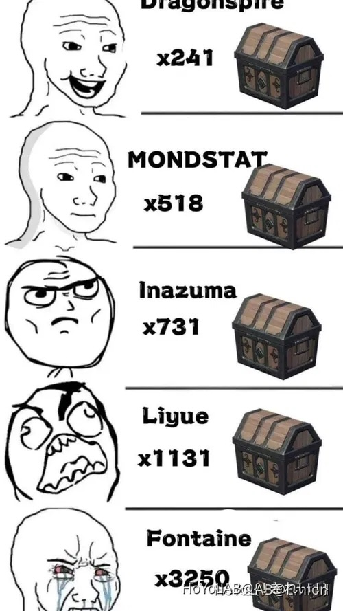

รหัสแลก ของ BENNYYYY (จริงๆแค่ในเดือนเกิด benny)
1.8SJSDSX68UF9
2.CT2BDW7JD38M
3.NA88ANTJL5SD
4.QOTR3M8X535N
5.CIJO8VL7B929
6.MEIR79527PDC
7.FBYQA7X71H92
8.WAZGIKZ9K6NM
9.TGEFB1F28HSB
10.JB95D2V5XGJ5
วิธีแลก ให้กดรูป paimon > setting > account > redeem code แล้วใส่โค้ด
18 ก.พ. 67 ที่มา: https://www.hoyolab.com/article/25176491 ที่มาภาพ: https://www.hoyolab.com/article/21752177 (ใช้ได้รึป่าวไม่รู้)

National team นักกีฬาทีมชาติ
ทีมเริ่มต้นที่ประกอบด้วยตัว 4 ดาวหาง่าย แต่โกงเวอร์ คือ benny(ผู้เกิด 29 ก.พ.) xingqiu xiangling(ที่แจกฟรี ไม่ต้องสุ่ม) และตัวละครอีกตัว แนะนำเป็น sucrose / chongyun หรือถ้าเล่นมาซักพักนังแล้ว kazuha / raiden จะโกงกว่า หรือจะใช้ตัวบัพอื่นหรือตัวลมใส่แฟก Viridescent Venerer เอามาลดต้านก็ได้
หลักการก็คือ เบนจะเป็นตัวปั่นพลังให้เซียงกิน และก็บัพให้เซียง ส่วนซิงก็แปะธาตุน้ำให้เซียงทำระเหย เมจจะ x1.5 ส่วนอีกตัวก็ ถ้าเป็นธาตุลมใส่แฟกลมก็ลดต้านได้ ทำให้แรงขึ้นอีก ตัวอื่นก็อาจจะมาทำปติกิริยาเพิ่ม หรือปั่นพลังให้(เช่นเอ๋) ทีมมันโกงไม่แพ้ทีม 5 ดาวเลย ผ่านคอนเทนได้ชิวๆ (มั้งนะ จริงๆเราก็ไม่ได้เล่นทีมชาติหรอก)
18 ก.พ. 67 (ใกล้วันเกิดเบนแล้ว เย่)

ก่องคั่น 2 ขั้นความสบายใจใน Fontaine
แน่นอนทุกคนต้องคิดว่าในแต่ละเมืองจำนวนกล่องที่มากที่สุดก็คือก่องไม้ที่ได้ของแย่สุด และที่น้อยสุดคือกล่อง lux ที่ดีสุด ใช่ มันเป็นใน mond liyue inaz และ sumeru แต่ fontaine... อยากถามว่า "ทำเพื่อ!"
18 ก.พ. 67 ที่มาภาพ: https://www.hoyolab.com/circles/2/30/feed?page_type=30&page_sort=hot